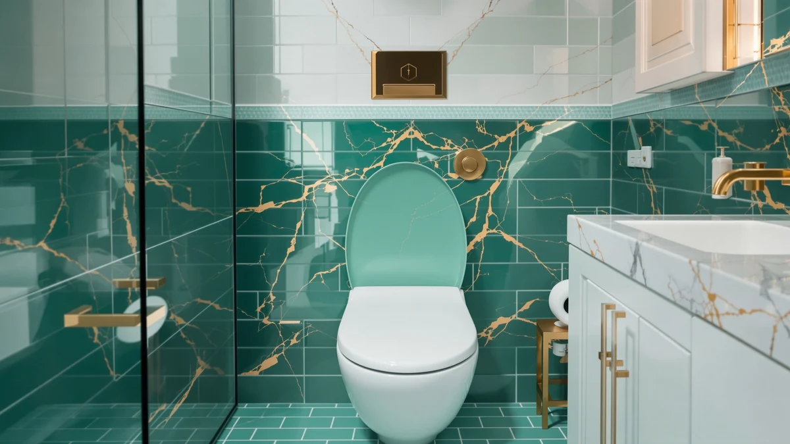

Toilet Bowl vs Tank (2026)
Prices and picks verified as of September 2026. Independent, reader-supported reviews.


Things to Know Before You Buy
- Tankless (bowl-only) toilets need at least 25 psi of line pressure to flush properly, which rules them out in older homes with weak municipal supply.
- Tank toilets refill over 30 to 60 seconds after each flush, so a second flush right away comes out weak until the tank tops off again.
- A running tank toilet almost always traces back to an $8 to $15 flapper, a repair most owners handle without calling a plumber.
- Tankless units cost more upfront and typically need a licensed plumber to install the flush valve, which adds to the total installation bill.
Toilet bowl vs tank comes down to how the fixture gets its flushing power: a tankless (flushometer) toilet pulls water straight from the supply line, while a tank toilet stores water above the bowl and releases it by gravity. You see the tankless style bolted to the wall in restaurants, airports, and office buildings, where a flush valve delivers a fast, forceful rinse the moment someone presses the lever. Homes almost always use the tank version instead, the two-piece or one-piece toilet most people grew up with, sitting quietly in the corner of the bathroom with a lid you can lift to check the flapper.
Picking between the two matters more than most homeowners realize, especially if you are renovating a bathroom, adding a half bath in a basement, or replacing an aging toilet that keeps running between flushes. Tankless models flush harder and take up less visual space, but they need higher water pressure and a plumber who has installed a flushometer before. Tank models are the safer default for almost any house, with parts you can buy at a hardware store and replace yourself in twenty minutes. This guide compares both setups on build quality, price, and daily use so you can match the right one to your plumbing and your budget.
Quick Answer
For most homes, a tank toilet wins the toilet bowl vs tank debate on cost, ease of repair, and compatibility with standard residential water pressure. A tankless bowl-only toilet earns its keep in commercial bathrooms, gyms, or high-traffic households that want the strongest flush and the smallest footprint, provided the water pressure and budget support it.
What is Toilet Bowl?
A toilet bowl, in the tankless sense, is a fixture with no visible reservoir sitting above it. Instead of storing water and releasing it by gravity, it connects directly to the building's water supply line through a flush valve, often called a flushometer. When you push the handle or wave past a sensor, the valve opens for a set interval, usually one to three seconds, and lets pressurized water rush straight into the bowl. That direct connection is one half of the toilet bowl vs tank divide, and it is why these toilets flush so hard and clear waste in a single pass, even with heavy loads.
You find this design in restaurants, schools, and office buildings because it recovers fast between uses and has fewer moving parts to fail: no fill valve, no flapper, nothing to wear out inside a tank. The tradeoff is that it depends entirely on your home's water pressure. Most manufacturers specify a minimum of 25 psi, and some want closer to 35 psi, so a house on a weak municipal line or a long uphill supply run may not flush reliably. Installation also calls for a plumber familiar with flush valves rather than a standard toilet swap, which raises the labor cost noticeably.
What is Tank?
A tank toilet is the design most Americans have used their entire life: a bowl topped by a rectangular reservoir that holds two to four gallons of water, cut off from the building's main supply by a fill valve. Flush the handle and a flapper at the bottom of the tank lifts, letting the stored water drop into the bowl by gravity rather than direct line pressure. Once the tank empties, the fill valve opens again and refills it over roughly 30 to 60 seconds, ready for the next flush.
Because the tank only needs enough water pressure to refill slowly, these toilets work in nearly any home, from a city apartment on a shared line to a rural house on a well pump. Every part inside the tank, the flapper, the fill valve, the fill tube, is a standard component sold at any hardware store, which keeps repairs cheap and mostly DIY. In the toilet bowl vs tank comparison, this is the setup that dominates residential bathrooms because it asks so little of your plumbing while still delivering a flush strong enough for daily household use.
Head-to-Head: Build Quality & Durability
Tankless bowl toilets have fewer parts that can fail over time. There is no fill valve to stick, no flapper to warp, and no float to misadjust, so the failure points shift to the flush valve itself and the solenoid or sensor on automatic models. Commercial flush valves are built for thousands of cycles a day and hold up well, but repair usually means calling a plumber rather than swapping a ten dollar part yourself.
Tank toilets carry more internal components, and that is both their weakness and their strength. A flapper degrades after a few years and starts leaking, a fill valve can run continuously once the seal wears out, and the float sometimes needs adjusting to stop a toilet from running. None of that is expensive or hard to fix, but it does mean more small maintenance tasks over the life of the fixture. The porcelain bowl and trapway wear at roughly the same rate in both designs, so glazing quality and brand matter more for long term durability than whether the flush comes from a tank or a valve. On raw build durability, the toilet bowl vs tank question favors the tankless side for fewer parts, and the tank side for cheaper, simpler repairs.
Head-to-Head: Price & Value
A standard tank toilet runs anywhere from $100 for a basic two-piece model to $500 or more for a one-piece unit with a soft-close seat and a WaterSense-rated dual flush. Replacement parts stay cheap across the board: a flapper costs under $15 and a fill valve rarely tops $25, so the lifetime cost of ownership stays low even if you replace both every few years.
A tankless flushometer toilet costs more from the start, often $300 to $700 for the bowl alone before you add the flush valve, and professional installation typically adds several hundred dollars because it is not a simple swap. Utility costs run close between the two once you compare a modern low-flow tank toilet to a code-compliant flush valve, so the real price gap in the toilet bowl vs tank decision sits in upfront hardware and installation, not water bills.
Head-to-Head: Use Experience
Day to day, the two feel different the moment you press the handle. A tankless toilet flushes almost instantly and clears the bowl in one strong pass, which is why offices and restaurants prefer it for high-traffic bathrooms where a weak flush means a line at the stall. The tradeoff is noise. Flush valves release pressurized water fast, and that rush is noticeably louder than a household tank toilet, worth considering if the bathroom sits next to a bedroom.
A tank toilet flushes more quietly and gives you a short buffer before you can flush again, since the tank needs time to refill. Most owners never notice this in a single-bathroom household, but a busy family bathroom with back-to-back use can occasionally catch the tank mid-refill. Tank toilets also let you make quick adjustments yourself, lifting the lid to jiggle a stuck flapper or nudge the float, an option a sealed flush valve does not offer. For most households living with a toilet every day, the toilet bowl vs tank tradeoff comes down to accepting more noise for speed, or more quiet for a short refill wait.
When to Choose Toilet Bowl
Choose the tankless bowl design if you are outfitting a commercial or high-traffic bathroom, a gym, a restaurant, a shared office space, where dozens of people use the same fixture every day and a weak flush becomes a maintenance headache. It also makes sense in a compact bathroom where you want the smaller visual footprint of a wall-mounted, tankless profile, provided your water line can deliver at least 25 psi. Homeowners who have already dealt with recurring flapper and fill valve failures in an older tank toilet, and who are willing to pay for a plumber-installed flush valve, sometimes switch for the reliability of fewer moving parts. This is the smaller slice of the toilet bowl vs tank market, but it is the right call when flush power and cycle speed matter more than upfront cost.
When to Choose Tank
Choose a tank toilet for almost any residential bathroom, especially in a house with standard municipal water pressure or a well system that cannot guarantee the steady 25+ psi a flushometer needs. It is the right pick if you want a fixture you can repair yourself with parts from any hardware store, or if budget matters and you would rather spend $150 to $300 once than pay for a plumber-installed flush valve. Families with young kids, renters, and anyone who values a quieter flush should default to the tank design too. In the toilet bowl vs tank decision, the tank setup is the practical default for homeowners. You would need a specific reason to look at the tankless alternative instead: water pressure limits, commercial-grade traffic, or a tight footprint.
Our Top Picks
Whether you land on a tankless bowl or a traditional tank toilet, a motion-activated night light makes the fixture easier to find and use safely after dark. These three options work with any bowl or tank configuration and install in minutes without tools.

Editor's Pick
2 Pack Toilet Night Lights
A reliable two-pack with a motion sensor that switches on automatically, good for lighting a tankless or a tank-style bowl without reaching for a wall switch.
$13.78
Check Price on Amazon
Best Value
Toilet Night Light 2Pack by
The most affordable pick here, with a simple clip-on design that fits the rim of nearly any bowl or tank toilet.
$9.89
Check Price on Amazon
Premium Choice
Toilet Night Light Motion Sensor
A brighter, adjustable light with multiple color modes, worth the extra cost if you want more visibility than a basic night light provides.
$15.99
Check Price on AmazonFrequently Asked Questions
What is the difference between a toilet bowl and a tank toilet?
A tankless bowl toilet, often called a flushometer toilet, connects directly to the building's water supply and flushes using line pressure alone. A tank toilet stores two to four gallons of water above the bowl and releases it by gravity when you flush. The toilet bowl vs tank difference comes down to where the flushing water is stored and how much pressure the fixture needs to work.
Can I install a tankless toilet in a regular house?
Yes, but only if your water line delivers enough pressure, usually at least 25 psi, and you are willing to pay a plumber to install a proper flush valve. Many residential water systems cannot consistently hit that pressure, which is why tank toilets remain the default for most homes.
Why does my tank toilet keep running after I flush?
A running toilet almost always means the flapper has warped or the fill valve is not sealing correctly. Both parts cost under 25 dollars combined and are simple to replace yourself with tools from any hardware store, no plumber required.
Which flushes better, a toilet bowl or a tank toilet?
A tankless bowl toilet flushes harder because it pulls straight from the pressurized water line instead of relying on gravity from a tank. A well-maintained modern tank toilet with a good trapway design still clears waste reliably enough for everyday household use.
Is a tankless toilet worth the extra cost for a home bathroom?
For most homeowners, no. The higher price and professional installation only pay off in high-traffic settings like offices or restaurants. A tank toilet delivers comparable performance for daily residential use at a fraction of the upfront and repair cost.
Final Verdict
The toilet bowl vs tank decision comes down to where you are installing the fixture and how much water pressure you have to work with. A tank toilet from a brand like KOHLER or American Standard remains the right default for nearly every home bathroom, cheap to repair and compatible with standard residential plumbing. Reserve the tankless bowl option for high-traffic or commercial settings where flush power and cycle speed outweigh the higher installation cost.